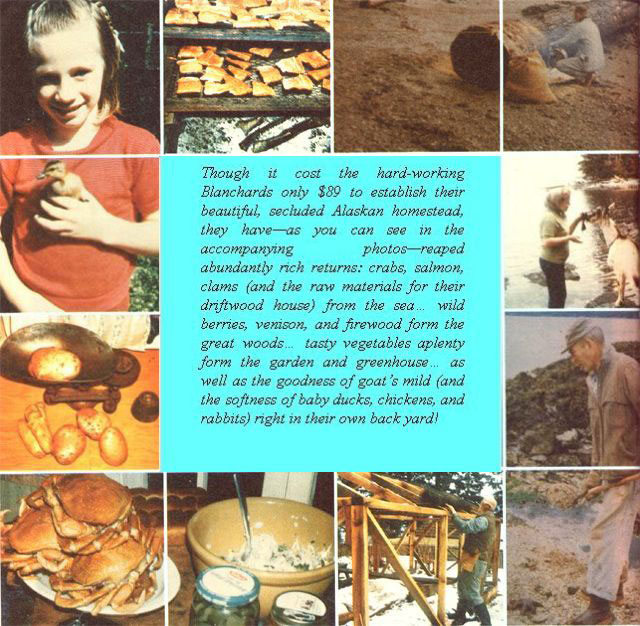
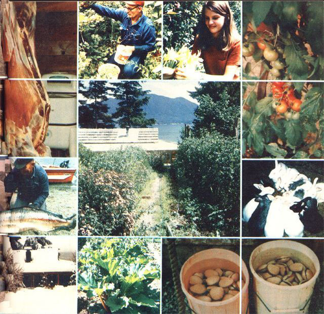

To Alaska’s Helen Blanchard, getting “back to basics” meant…
----- REFORT FROM THEM THAT'S DOIN' -----
Back in 1958, when Alaska was still a territory, my husband and I carved out our own self-sustaining world-on Gravina Island-under the Federal Homestead Act.
What did it cost? You might be surprised to learn that our "piece of paradise" only set us back $85 for homesteading fees and $4.00 for a roll of tar paper... to protect the outer walls (under our hand-split cedar shakes) of our driftwood log cabin from the constant dampness of southeastern Alaska's coastal weather.
Doing without manufactured goods-and most of the other folderol that many modern folk seem to think is necessary for happiness-was a way of life in the Ozark hills where my husband and I grew up. Our parents took pleasure in hard work... and they taught us to work, too!
In those not-so-long-ago days, chair frames were turned on a foot-powered lathe and were bottomed with white oak splints. Oak strips were also used to make baskets. Corn shucks filled cotton ticking for bed pads... and deliciously soft, warm, feather-filled mattresses were laid on top. Our underwear was created from flour sacks, but the rest of our clothes-made on a treadle machine-were "store-boughten" cotton.
Even then, we knew we lived "modern" lives compared to those our grandparents talked about, but-though we did have "real" cloth-our family understood that such material was a luxury .. to be conserved until the rags of former outfits were used in rugs and each scrap that was left over from the sewing became part of a quilt.
The fact is, the true homesteader has little need for store-bought "newness". The homestead itself-with satin-sleek newborn kids, silky soft rabbits, and fluffy chicks-is always an exciting and ever-changing world to those who are attuned to its wonders.
Party line telephones were frowned on-in the Ozarks of my childhood-as gossipy time wasters, and (though many of our Alaskan neighbors "can't live without 'em") I feel the same way about today's CB radios. "Visiting" by means of such contraptions could, for instance, have cost us the valuable time we used to build the solar greenhouse that gives us fruit and vegetables right into December.
We don't have electricity either (after all, both my husband and I lived the first 25 years of our lives without utility power, and feel very comfortable with our wood-burning stove and oil lamps), and-with the exorbitant cost of electricity in Alaska-our "sacrifice" amounts to real savings!
Though we don't keep an itemized list of everything we buy, we do have a good idea of the cost of living on our homestead. Our only luxury is a 55-gallon, $30 barrel of white diesel fuel (that lasts a full year when burned in our lamps)... and-since we raise forage crops and utilize all our weeds and garden greens to feed our animals-$600 buys a year's supply of grain and alfalfa for our goats, rabbits, and chickens. In turn, the critters more than earn the cost of their feed, especially since I have customers who pay $1.00 for a quart of milk, $1.25 for yogurt, and $1.25 for a dozen eggs. (And, of course, our animals also furnish much of our food and fertilizer.)
Raising our own victuals is really all the health insurance my husband and I need. With a year-round supply of naturally grown potatoes and other root crops-plus dried peas, cabbage, herbs, onions, garlic... and our own canned garden produce-we don't have to buy much from the store. The homestead, as noted, also provides us with milk, meat, and eggs... and-from the surrounding woods and beaches-we can obtain venison, mushrooms, blueberries, red huckleberries, bog cranberries, fish, and shellfish. However, to supplement this fare, I do sometimes barter smoked fish for whole grains and honey.
In addition, those few things that must be bought-such as feed, seeds, and plants-can be absorbed into the homestead budget by raising one or two crops that are locally in demand. In my teen years I sold chickens to earn money... and in the Land of the Midnight Sun organic eggs are eagerly sought after. One old-timer here grew vegetables for years, and used a rowboat to deliver his produce to the stores. He had no other means of livelihood, yet the man raised a family and sent his children to school.
My husband, who's a journeyman machinist, makes extra cash by doing seasonal work-for a month or so in the summer-at a local salmon cannery. He worries about having money for hospital care in our old age... and is saving to provide for such an eventuality.
Of course, I'm glad he's planning for the future, but I don't worry about growing old at all... simply because I figure to keep on homesteadin' forever!
|
 |
 |
|